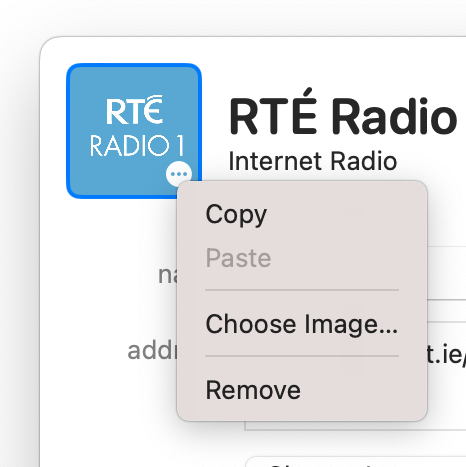
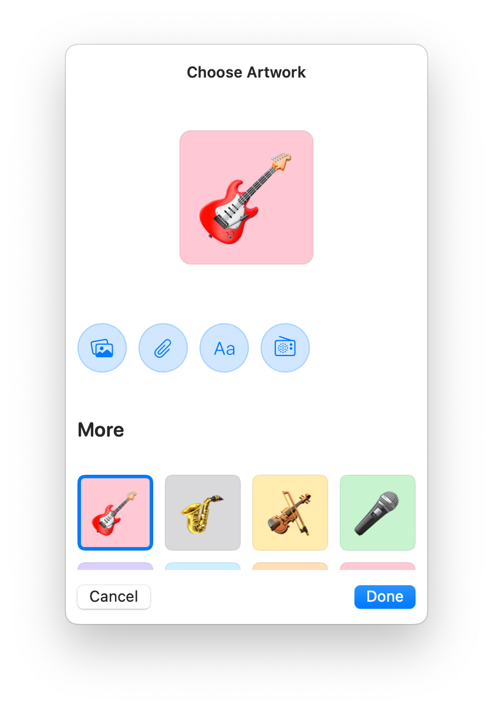

You can add or edit the artwork for a station in your library from the Edit panel.
Right-click, control-click, or, on iOS, long-press, a station in your library and choose Edit.
From the Edit panel, select Choose Image… to show the Artwork Chooser. You can also select the artwork thumbnail in the Edit panel.
From the artwork thumbnail's context menu, you may Copy or Remove the current artwork, or Paste new artwork from the clipboard.
From the Artwork Chooser, you can create custom artwork using Emoji, text, and color, or pick from one of the simple presets.
